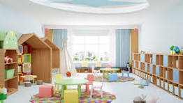

ESCUELA INFANTIL POMPITAS |
 |
|---|
ESCUELA INFANTIL POMPITAS |
|
|---|
Ven a conocernos |

Más de 450 m2 de instalaciones distribuido en 4 aulas, nuestro Ágora de 100m2, cocina Propia, lavandería y sala de Enfermería. Nuestro sello de calidad, menos aulas, para crear mayor espacio de juego.
Participación activa de las familias en el centro. Participación de las familias en talleres del centro. Acceso directo a las aulas entradas y salidas. Celebración de fiestas anuales: Navidad, Carnaval, etc. |